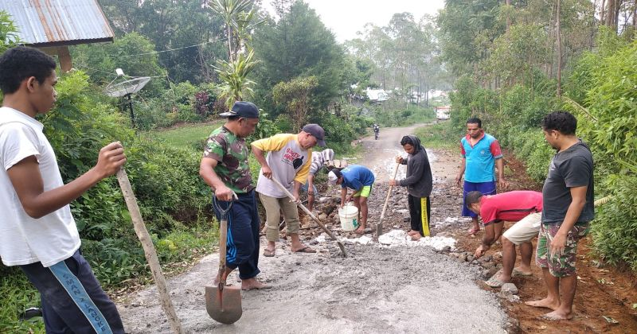

Dokumentasi Kegiatan

11 Januari 2024
Pelatihan umkm untuk warga desa tentang digital bisnis
30 Januari 2024
Pengajian Sholawat NariyahPKK Desa Sumberkolak

25 Februari 2024
Festival seni dan budaya desa dalam rangka melestarikan budaya

28 April 2024
Gotong royong perbaikan jalan desa bersama warga sekitar

14 Mei 2024
Program penanaman seribu pohon sukses bersama dinas lingkungan
17 Agustus 2024